Core methods#
Time series methods#
restrict#
restrict is used to get time points within an IntervalSet. This method is available for TsGroup, Tsd, TsdFrame, TsdTensor and Ts objects.
tsdframe.restrict(epochs)
Time (s) a b c
---------- --------- --------- ---------
10.0 -0.627221 0.655553 1.12421
11.0 -0.420353 0.736352 -1.27828
12.0 2.39251 -0.713349 -0.179733
13.0 -0.298125 -0.893438 -0.971111
14.0 -0.184861 -0.232463 -0.715519
15.0 0.527469 1.21655 -1.31853
16.0 -0.128186 1.72147 0.603737
...
74.0 0.141345 0.461685 -0.806108
75.0 -0.694995 0.233346 -2.53229
76.0 -0.145356 -0.308163 1.23675
77.0 -1.28719 1.22185 -0.379193
78.0 -1.30487 -0.346492 2.07925
79.0 -3.09598 -0.917472 0.384367
80.0 2.47949 -0.458612 1.89366
dtype: float64, shape: (32, 3)
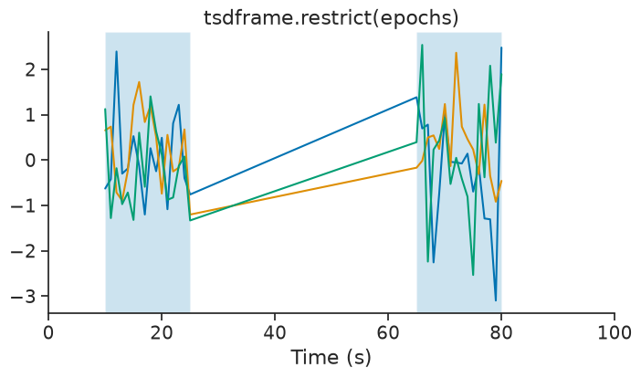
This operation update the time support attribute accordingly.
print(epochs)
print(tsdframe.restrict(epochs).time_support)
index start end
0 10 25
1 65 80
shape: (2, 2), time unit: sec.
index start end
0 10 25
1 65 80
shape: (2, 2), time unit: sec.
in_interval#
in_interval is similar to restrict, except instead of returning the restricted time series, it returns a Tsd of booleans for each time point indicating whether or not it falls within the intervals of an IntervalSet.
tsdframe.in_interval(epochs)
Time (s)
---------- -----
0.0 False
1.0 False
2.0 False
3.0 False
4.0 False
5.0 False
6.0 False
...
93.0 False
94.0 False
95.0 False
96.0 False
97.0 False
98.0 False
99.0 False
dtype: bool, shape: (100,)
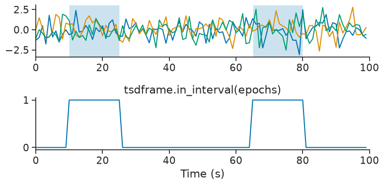
count#
count returns the number of timestamps within bins or epochs of an IntervalSet object.
This method is available for TsGroup, Tsd, TsdFrame, TsdTensor and Ts objects.
With a defined bin size:
count = tsgroup.count(bin_size=1.0, time_units='s')
print(count)
Time (s) 0 1 2
---------- --- --- ---
0.5 0 0 0
1.5 0 1 1
2.5 0 1 0
3.5 0 0 0
4.5 1 0 0
5.5 0 1 0
6.5 0 0 0
...
93.5 0 0 1
94.5 0 0 0
95.5 0 0 0
96.5 0 0 1
97.5 0 0 0
98.5 0 0 0
99.5 0 0 0
dtype: int64, shape: (100, 3)
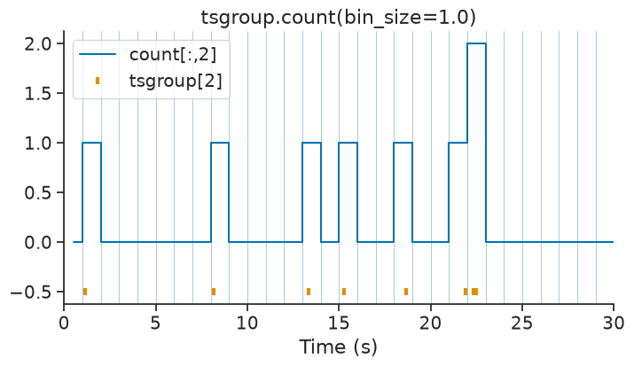
With an IntervalSet:
count_ep = tsgroup.count(ep=epochs)
print(count_ep)
Time (s) 0 1 2
---------- --- --- ---
17.5 1 3 6
72.5 3 2 5
dtype: int64, shape: (2, 3)
trial_count#
TsGroup and Ts objects each have the method trial_count, which builds a trial-based count tensor from an IntervalSet object.
Similar to count, this function requires a bin_size parameter which determines the number of time bins within each trial.
The resulting tensor has shape (number of group elements, number of trials, number of time bins) for TsGroup objects,
or (number of trials, number of time bins) for Ts objects.
ep = nap.IntervalSet([5, 17, 30, 50], metadata={'trials':[1, 2]})
tensor = tsgroup.trial_count(ep, bin_size=2)
print(tensor, "\n")
print("Tensor shape = ", tensor.shape)
[[[ 0. 0. 0. 0. 1. 0. nan nan nan nan]
[ 0. 0. 0. 0. 0. 1. 0. 0. 0. 1.]]
[[ 1. 1. 0. 0. 0. 0. nan nan nan nan]
[ 0. 0. 1. 1. 0. 0. 0. 1. 0. 0.]]
[[ 0. 1. 0. 0. 1. 1. nan nan nan nan]
[ 0. 2. 0. 0. 1. 0. 0. 0. 1. 1.]]]
Tensor shape = (3, 2, 10)
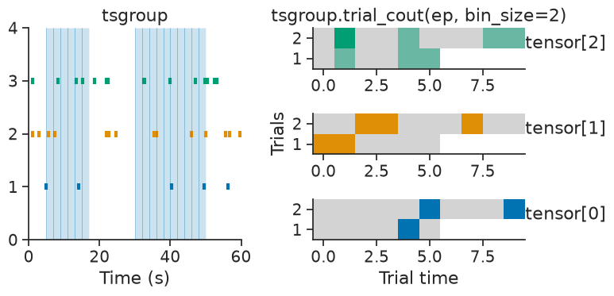
The array is padded with NaNs when the trials have uneven durations,
The padding value can be controlled using the parameter padding_value.
Additionally, the parameter align can change whether the count is aligned to the “start” or “end” of each trial.
tensor = tsgroup.trial_count(ep, bin_size=2, align="end", padding_value=-1)
print(tensor, "\n")
print("Tensor shape = ", tensor.shape)
[[[-1. -1. -1. -1. 0. 0. 0. 0. 1. 0.]
[ 0. 0. 0. 0. 0. 1. 0. 0. 0. 1.]]
[[-1. -1. -1. -1. 1. 1. 0. 0. 0. 0.]
[ 0. 0. 1. 1. 0. 0. 0. 1. 0. 0.]]
[[-1. -1. -1. -1. 0. 1. 0. 0. 1. 1.]
[ 0. 2. 0. 0. 1. 0. 0. 0. 1. 1.]]]
Tensor shape = (3, 2, 10)
subsample#
The subsample method randomly subsamples timestamps in each element of a TsGroup. This is useful for creating smaller datasets for testing, cross-validation, or comparing analyses with matched sample sizes.
print("Original TsGroup:")
print(tsgroup_sub)
Original TsGroup:
Index rate
------- ------
0 1
1 2
2 3
Subsample to keep 50% of timestamps with a fixed seed for reproducibility:
subsampled = tsgroup_sub.subsample(0.5, seed=42)
print("\nSubsampled TsGroup (50%):")
print(subsampled)
Subsampled TsGroup (50%):
Index rate
------- ------
0 0.5
1 1
2 1.5
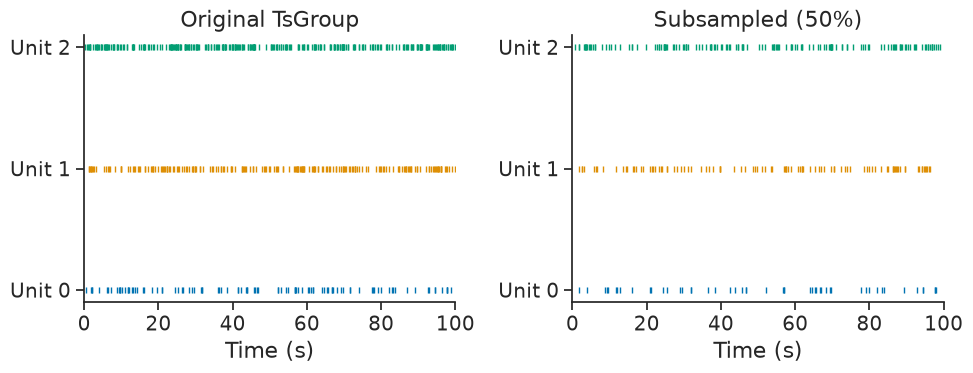
The time support and metadata are preserved in the subsampled TsGroup:
print("Time support preserved:", np.allclose(tsgroup_sub.time_support.values, subsampled.time_support.values))
Time support preserved: True
bin_average#
bin_average downsamples time series by averaging data point falling within a bin. This method is available for Tsd, TsdFrame and TsdTensor. While bin_average is good for downsampling with precise control of the resulting bins, it does not apply any antialiasing filter. The function decimate is also available for down-sampling without aliasing.
tsdframe.bin_average(3.5)
Time (s) a b c
---------- --------- --------- ---------
1.75 -0.888703 0.147465 -0.622695
5.25 0.240813 0.255688 -0.593598
8.75 -0.671571 0.459806 0.803706
12.25 0.558012 -0.290145 -0.809709
15.75 -0.246116 0.885884 -0.504828
19.25 0.168614 0.322722 0.719763
22.75 0.13766 0.203403 -0.438516
...
75.25 -0.233002 0.128956 -0.700551
78.75 -0.80214 -0.125183 0.994521
82.25 -0.407828 0.126004 -1.10552
85.75 1.02058 -0.470644 1.07647
89.25 0.435332 -1.06644 0.181698
92.75 -0.958747 0.503918 0.800774
96.25 -0.146111 0.525109 0.512093
dtype: float64, shape: (28, 3)
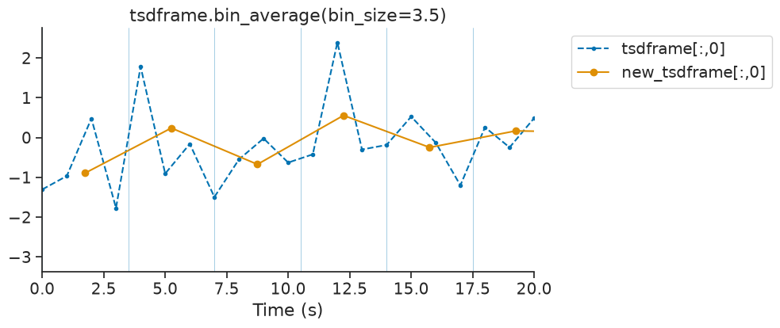
decimate#
The decimate method downsamples the time series by an integer factor after an antialiasing filter.
new_tsd = tsd.decimate(down=4)
The original time series was sampled at 1Hz. The new time series has a rate of 0.25 Hz.
print(f"Original rate : {tsd.rate}")
print(f"New rate : {new_tsd.rate}")
Original rate : 1.0
New rate : 0.25
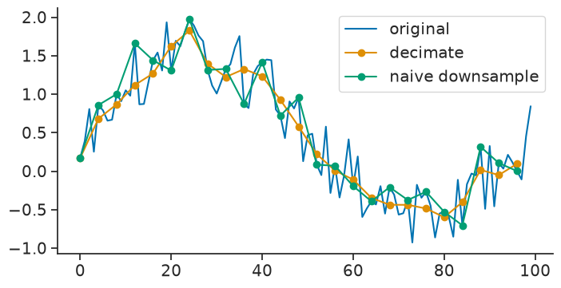
interpolate#
The interpolate method of Tsd, TsdFrame and TsdTensor can be used to fill gaps in a time series. It is a wrapper of numpy.interp.
new_tsd = tsd.interpolate(ts)
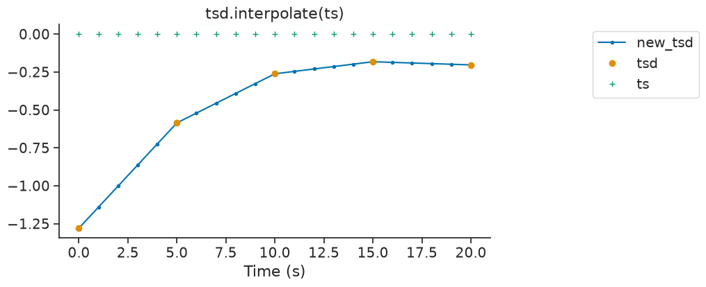
value_from#
By default, value_from assigns to timestamps the closest value in time from another time series. Let’s define the time series we want to assign values from.
For every timestamps in tsgroup, we want to assign the closest value in time from tsd.
tsgroup_from_tsd = tsgroup.value_from(tsd)
We can display the first element of tsgroup and tsgroup_sin.
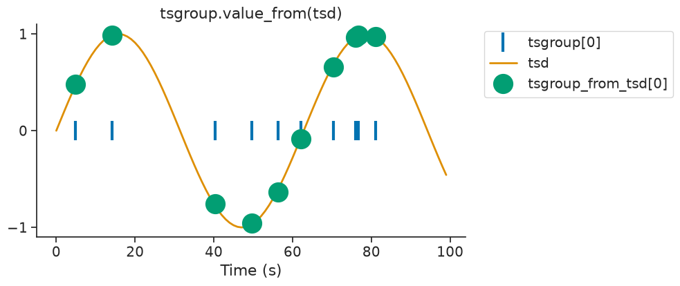
The argument mode can control if the nearest target time is taken before or
after the reference time.
In this case, the variable ts receive data from the time point before.
new_ts_before = ts.value_from(tsd, mode="before")
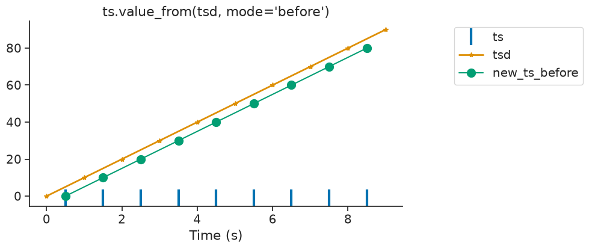
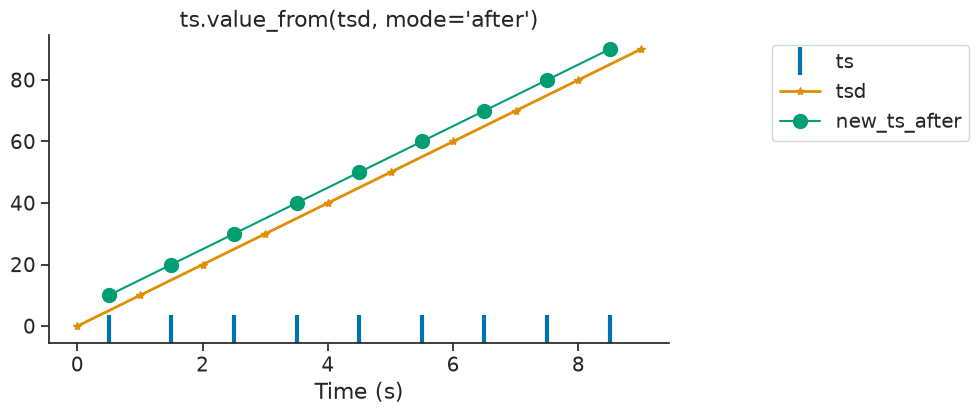
If there is no time point found before or after or within the interval, the function assigns Nans.
tsd = nap.Tsd(t=np.arange(1, 10, 1), d=np.arange(10, 100, 10))
ep = nap.IntervalSet(start=0, end = 10)
ts = nap.Ts(t=[0, 9])
# First ts is at 0s. First tsd is at 1s.
ts.value_from(tsd, ep=ep, mode="before")
Time (s)
---------- ---
0 nan
9 90
dtype: float64, shape: (2,)
threshold#
The method threshold of Tsd returns a new Tsd with all the data above or below a certain threshold. Default is above. The time support of the new Tsd object get updated accordingly.
tsd_above = tsd.threshold(0.5, method='above')
This method can be used to isolate epochs for which a signal is above/below a certain threshold.
epoch_above = tsd_above.time_support
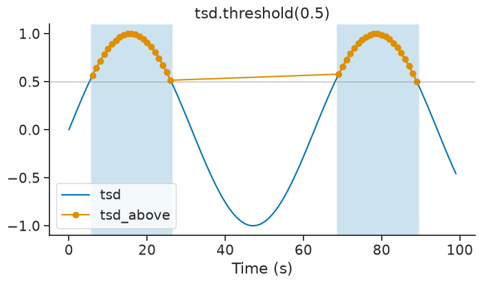
find_peaks#
The find_peaks method detects local maxima in a Tsd or TsdFrame.
It wraps scipy.signal.find_peaks
and returns the time points and values of the detected peaks.
peaks = tsd.find_peaks()
print(peaks)
Time (s)
------------------ ---------
0.07 0.749386
0.25 1.4
0.43 0.749386
0.64 -0.390091
0.86 -0.390091
1.07 0.749386
1.25 1.4
...
2.64 -0.390091
2.86 -0.390091
3.0700000000000003 0.749386
3.25 1.4
3.43 0.749386
3.64 -0.390091
3.86 -0.390091
dtype: float64, shape: (20,)
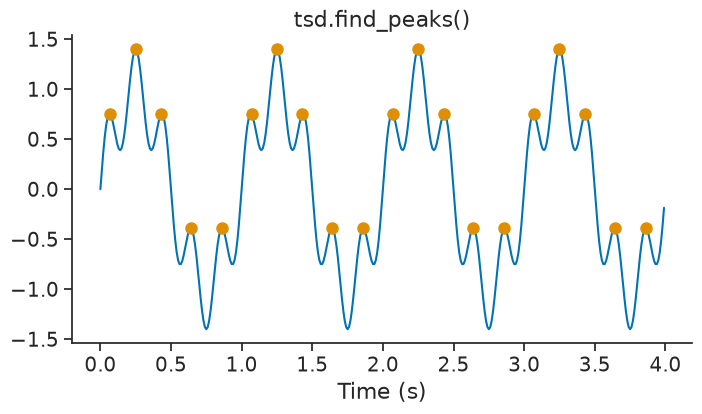
The parameter height can be used to set a minimum height for the peaks. This is useful to filter out small peaks that may be due to noise.
peak_height = tsd.find_peaks(height=0.5)
print(peak_height)
Time (s)
---------- --------
0.07 0.749386
0.25 1.4
0.43 0.749386
1.07 0.749386
1.25 1.4
1.43 0.749386
2.07 0.749386
2.25 1.4
2.43 0.749386
3.07 0.749386
3.25 1.4
3.43 0.749386
dtype: float64, shape: (12,)
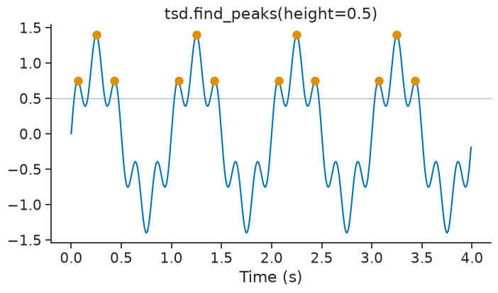
For TsdFrame, find_peaks applies the detection independently to each column and returns a TsGroup where each entry corresponds to one column.
peaks_frame = tsdframe.find_peaks(height=0.5)
print(peaks_frame)
Index rate columns
------- ------- ---------
0 3.00752 A
1 3.00752 B
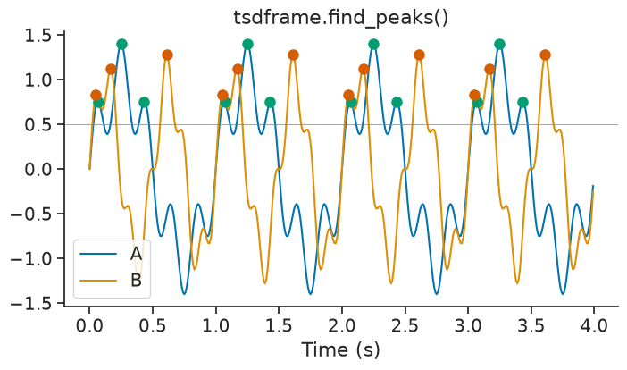
You can also pass epochs to restrict the peak detection to specific time intervals.
peaks_epoch = tsdframe.find_peaks(epochs=intervalset, height=0.5)
print(peaks_epoch)
Index rate columns
------- ------ ---------
0 3 A
1 3 B
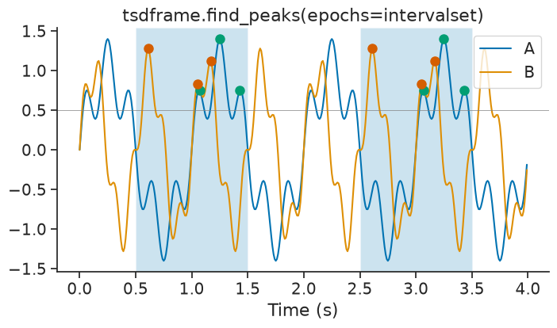
The time support of the resulting TsGroup is updated to reflect the epochs used for peak detection.
print("Peak time support:", peaks_epoch.time_support)
Peak time support: index start end
0 0.5 1.5
1 2.5 3.5
shape: (2, 2), time unit: sec.
derivative#
The derivative method of Tsd, TsdFrame and TsdTensor can be used to calculate the derivative of a time series with respect to time. It is a wrapper of numpy.gradient.
derivative = tsd.derivative(ep=ep)
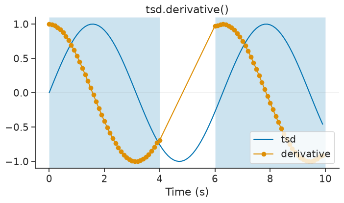
convolve#
The convolve method performs discrete linear convolution of a time series with a one-dimensional kernel. This is useful for filtering, smoothing, or applying custom kernels to your data. This method is available for Tsd, TsdFrame, and TsdTensor objects.
A simple example is applying a moving average filter using a uniform kernel:
kernel = np.ones(5) / 5 # 5-point moving average
smoothed = tsd.convolve(kernel)
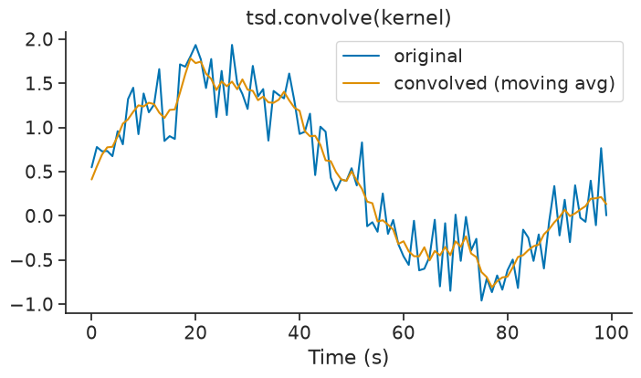
The ep parameter allows you to restrict the convolution to specific epochs. The convolution is applied independently within each epoch:
ep = nap.IntervalSet(start=[0, 60], end=[40, 100])
smoothed_ep = tsd.convolve(kernel, ep=ep)
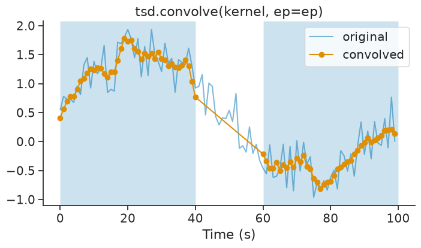
The trim parameter controls which side of the convolution output is trimmed to match the original size. Options are 'both' (default), 'left', or 'right':
conv_both = short_tsd.convolve(kernel, trim='both')
conv_left = short_tsd.convolve(kernel, trim='left')
conv_right = short_tsd.convolve(kernel, trim='right')
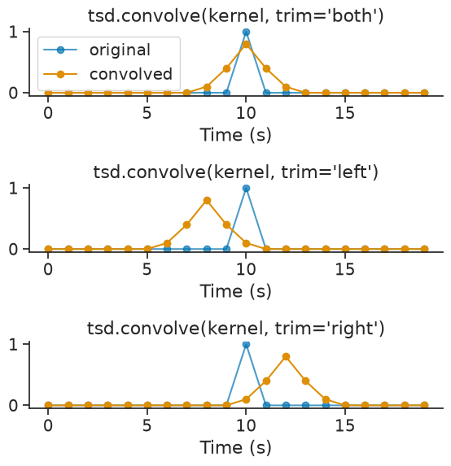
For TsdFrame and TsdTensor, the convolution is applied independently to each column/dimension. You can also use a 2-D kernel where each column of the kernel is convolved with each column of the time series:
# 1-D kernel applied to all columns
kernel_1d = np.ones(5) / 5
smoothed_frame = tsdframe.convolve(kernel_1d)
print(smoothed_frame)
Time (s) a b
---------- ---------- ---------
0.0 0.157753 0.252094
1.0 0.393509 0.216109
2.0 0.179358 0.427
3.0 0.331753 0.491323
4.0 0.280275 0.9939
5.0 0.0538983 0.756037
6.0 -0.179758 1.1492
...
93.0 -0.384109 -0.490112
94.0 0.126337 -0.40158
95.0 0.383111 -0.517526
96.0 0.377081 -0.558431
97.0 0.0331215 -0.165013
98.0 -0.0466878 0.389506
99.0 -0.43787 0.311487
dtype: float64, shape: (100, 2)
to_trial_tensor#
Tsd, TsdFrame, and TsdTensor all have the method to_trial_tensor, which creates a numpy array from an IntervalSet by slicing the time series. The resulting tensor has shape (shape of time series, number of trials, number of time points), where the first dimension(s) is dependent on the object.
tsd = nap.Tsd(t=np.arange(0, 100, 1), d=np.sin(np.arange(0, 10, 0.1)))
ep = nap.IntervalSet([0, 10, 30, 50, 70, 75], metadata={'trials':[1, 2, 3]})
print(ep)
index start end trials
0 0 10 1
1 30 50 2
2 70 75 3
shape: (3, 2), time unit: sec.
The following example returns a tensor with shape (3, 21), for 3 trials and 21 time points, where the first dimension is dropped due to this being a Tsd object.
tensor = tsd.to_trial_tensor(ep)
print(tensor, "\n")
print("Tensor shape = ", tensor.shape)
[[ 0. 0.09983342 0.19866933 0.29552021 0.38941834 0.47942554
0.56464247 0.64421769 0.71735609 0.78332691 0.84147098 nan
nan nan nan nan nan nan
nan nan nan]
[ 0.14112001 0.04158066 -0.05837414 -0.15774569 -0.2555411 -0.35078323
-0.44252044 -0.52983614 -0.61185789 -0.68776616 -0.7568025 -0.81827711
-0.87157577 -0.91616594 -0.95160207 -0.97753012 -0.993691 -0.99992326
-0.99616461 -0.98245261 -0.95892427]
[ 0.6569866 0.72896904 0.79366786 0.85043662 0.8987081 0.93799998
nan nan nan nan nan nan
nan nan nan nan nan nan
nan nan nan]]
Tensor shape = (3, 21)
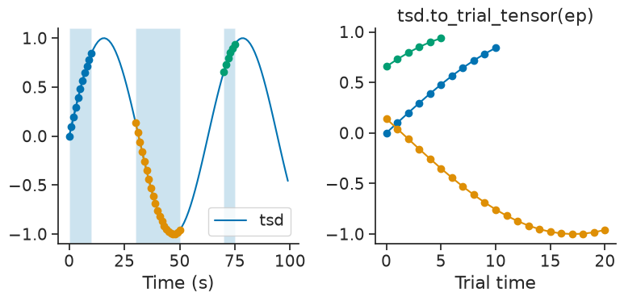
Since trial 2 is twice as long as trial 1, the array is padded with NaNs. The padding value can be changed by setting the parameter padding_value.
tensor = tsd.to_trial_tensor(ep, padding_value=-1)
print(tensor, "\n")
print("Tensor shape = ", tensor.shape)
[[ 0. 0.09983342 0.19866933 0.29552021 0.38941834 0.47942554
0.56464247 0.64421769 0.71735609 0.78332691 0.84147098 -1.
-1. -1. -1. -1. -1. -1.
-1. -1. -1. ]
[ 0.14112001 0.04158066 -0.05837414 -0.15774569 -0.2555411 -0.35078323
-0.44252044 -0.52983614 -0.61185789 -0.68776616 -0.7568025 -0.81827711
-0.87157577 -0.91616594 -0.95160207 -0.97753012 -0.993691 -0.99992326
-0.99616461 -0.98245261 -0.95892427]
[ 0.6569866 0.72896904 0.79366786 0.85043662 0.8987081 0.93799998
-1. -1. -1. -1. -1. -1.
-1. -1. -1. -1. -1. -1.
-1. -1. -1. ]]
Tensor shape = (3, 21)
By default, time series are aligned to the start of each trial. To align the time series to the end of each trial, the optional parameter align can be set to “end”.
tensor = tsd.to_trial_tensor(ep, align="end")
print(tensor, "\n")
print("Tensor shape = ", tensor.shape)
[[ nan nan nan nan nan nan
nan nan nan nan 0. 0.09983342
0.19866933 0.29552021 0.38941834 0.47942554 0.56464247 0.64421769
0.71735609 0.78332691 0.84147098]
[ 0.14112001 0.04158066 -0.05837414 -0.15774569 -0.2555411 -0.35078323
-0.44252044 -0.52983614 -0.61185789 -0.68776616 -0.7568025 -0.81827711
-0.87157577 -0.91616594 -0.95160207 -0.97753012 -0.993691 -0.99992326
-0.99616461 -0.98245261 -0.95892427]
[ nan nan nan nan nan nan
nan nan nan nan nan nan
nan nan nan 0.6569866 0.72896904 0.79366786
0.85043662 0.8987081 0.93799998]]
Tensor shape = (3, 21)
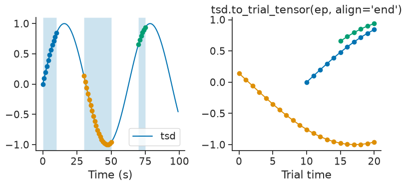
time_diff#
Ts, Tsd, TsdFrame, TsdTensor, and TsGroup all have the method time_diff, which computes the time differences between subsequent timepoints.
For example, if a Ts object contained a set of spike times, time_diff would compute the inter-spike interval (ISI).
This method returns a new Tsd object, with values being each time difference, and time indices being their reference time point.
Passing epochs restricts the computation to the given epochs.
The reference time point can be adjusted by the optional align parameter, which can be set to "start", "center", or "end" (the default being "center").
time_diffs = ts.time_diff(align="center")
print(time_diffs)
Time (s)
---------- --
3 4
5.5 1
9 6
14 4
17 2
18.5 1
dtype: float64, shape: (6,)
Setting align="center" sets the reference time point to the midpoint between the timestamps used to calculate the time difference.
Setting align="start" or align="end" sets the reference time point to the earlier or later timestamp, respectively.
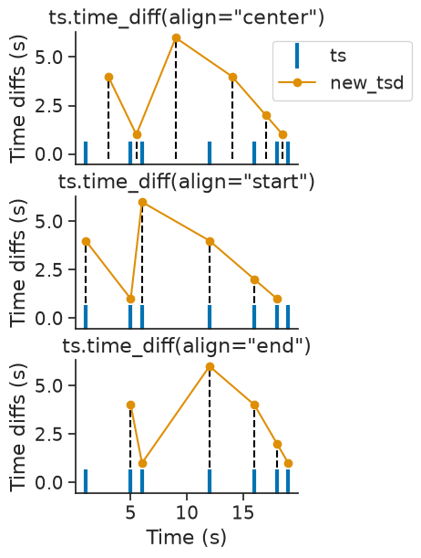
Mapping between TsGroup and Tsd#
It’s is possible to transform a TsGroup to Tsd with the method
to_tsd and a Tsd to TsGroup with the method to_tsgroup.
This is useful to flatten the activity of a population in a single array.
tsd = tsgroup.to_tsd()
print(tsd)
Time (s)
------------------ --
1.0277882232532565 1
1.1709307031091853 2
2.9416160910041844 1
4.904792993667451 0
5.678722416571835 1
7.455689788957409 1
8.182375525665343 2
...
86.06242879678975 2
87.88589054145744 1
90.02549565271448 1
90.25652734361644 1
92.45673918885207 1
93.14433222650554 2
96.90429443990492 2
dtype: float64, shape: (60,)
The object tsd contains all the timestamps of the tsgroup with
the associated value being the index of the unit in the TsGroup.
The method to_tsgroup converts the Tsd object back to the original TsGroup.
back_to_tsgroup = tsd.to_tsgroup()
print(back_to_tsgroup)
Index rate
------- ------
0 0.1
1 0.2
2 0.3
Parameterizing a raster#
The method to_tsd makes it easier to display a raster plot.
TsGroup object can be plotted with plt.plot(tsgroup.to_tsd(), 'o').
Timestamps can be mapped to any values passed directly to the method
or by giving the name of a specific metadata name of the TsGroup.
tsgroup['label'] = np.arange(3)*np.pi
print(tsgroup)
Index rate label
------- ------ -------
0 0.1 0
1 0.2 3.14
2 0.3 6.28
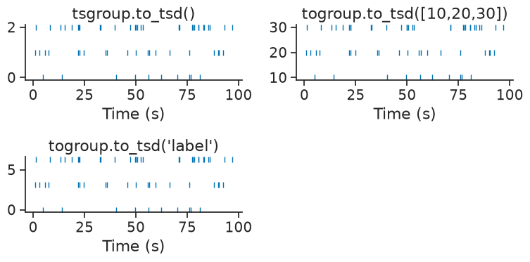
Special slicing: TsdFrame#
For users that are familiar with pandas, TsdFrame is the closest object to a DataFrame, but there are distinctive behavior when slicing the object. TsdFrame behaves primarily like a numpy array. This section lists all the possible ways of slicing TsdFrame.
1. If not column labels are passed#
tsdframe = nap.TsdFrame(t=np.arange(4), d=np.random.randn(4,3))
print(tsdframe)
Time (s) 0 1 2
---------- --------- --------- ---------
0 -0.110541 1.02017 -0.69205
1 1.53638 0.286344 0.608844
2 -1.04525 1.21115 0.689818
3 1.30185 -0.628088 -0.481027
dtype: float64, shape: (4, 3)
Slicing should be done like numpy array:
tsdframe[0]
array([-0.11054066, 1.02017271, -0.69204985])
tsdframe[:, 1]
Time (s)
---------- ---------
0 1.02017
1 0.286344
2 1.21115
3 -0.628088
dtype: float64, shape: (4,)
tsdframe[:, [0, 2]]
Time (s) 0 2
---------- --------- ---------
0 -0.110541 -0.69205
1 1.53638 0.608844
2 -1.04525 0.689818
3 1.30185 -0.481027
dtype: float64, shape: (4, 2)
2. If column labels are passed as integers#
The typical case is channel mapping. The order of the columns on disk are different from the order of the columns on the recording device it corresponds to.
tsdframe = nap.TsdFrame(t=np.arange(4), d=np.random.randn(4,4), columns = [3, 2, 0, 1])
print(tsdframe)
Time (s) 3 2 0 1
---------- --------- --------- --------- ---------
0 2.30392 -1.06002 -0.13595 1.13689
1 0.097725 0.582954 -0.399449 0.370056
2 -1.30653 1.65813 -0.118164 -0.680178
3 0.666383 -0.46072 -1.33426 -1.34672
dtype: float64, shape: (4, 4)
In this case, indexing like numpy still has priority which can led to confusing behavior:
tsdframe[:, [0, 2]]
Time (s) 3 0
---------- --------- ---------
0 2.30392 -0.13595
1 0.097725 -0.399449
2 -1.30653 -0.118164
3 0.666383 -1.33426
dtype: float64, shape: (4, 2)
Note how this corresponds to column labels 3 and 0.
To slice using column labels only, the TsdFrame object has the loc method similar to Pandas:
tsdframe.loc[[0, 2]]
Time (s) 0 2
---------- --------- ---------
0 -0.13595 -1.06002
1 -0.399449 0.582954
2 -0.118164 1.65813
3 -1.33426 -0.46072
dtype: float64, shape: (4, 2)
In this case, this corresponds to columns labelled 0 and 2.
3. If column labels are passed as strings#
Similar to Pandas, it is possible to label columns using strings.
tsdframe = nap.TsdFrame(t=np.arange(4), d=np.random.randn(4,3), columns = ["kiwi", "banana", "tomato"])
print(tsdframe)
Time (s) kiwi banana tomato
---------- --------- ---------- ----------
0 0.693773 -0.159573 -0.133702
1 1.07774 -1.12683 -0.730678
2 -0.38488 0.0943516 -0.0421715
3 -0.286887 -0.0616264 -0.107305
dtype: float64, shape: (4, 3)
When the column labels are all strings, it is possible to use either direct bracket indexing or using the loc method:
print(tsdframe['kiwi'])
print(tsdframe.loc['kiwi'])
Time (s)
---------- ---------
0 0.693773
1 1.07774
2 -0.38488
3 -0.286887
dtype: float64, shape: (4,)
Time (s)
---------- ---------
0 0.693773
1 1.07774
2 -0.38488
3 -0.286887
dtype: float64, shape: (4,)
4. If column labels are mixed type#
It is possible to mix types in column names.
tsdframe = nap.TsdFrame(t=np.arange(4), d=np.random.randn(4,3), columns = ["kiwi", 0, np.pi])
print(tsdframe)
Time (s) kiwi 0 3.141592653589793
---------- --------- --------- -------------------
0 -0.719604 -0.812993 0.274516
1 -0.890915 -1.15736 -0.312292
2 -0.157667 2.25672 -0.7047
3 0.943261 0.747188 -1.18894
dtype: float64, shape: (4, 3)
Direct bracket indexing only works if the column label is a string.
print(tsdframe['kiwi'])
Time (s)
---------- ---------
0 -0.719604
1 -0.890915
2 -0.157667
3 0.943261
dtype: float64, shape: (4,)
To slice with mixed types, it is best to use the loc method:
print(tsdframe.loc[['kiwi', np.pi]])
Time (s) kiwi 3.141592653589793
---------- --------- -------------------
0 -0.719604 0.274516
1 -0.890915 -0.312292
2 -0.157667 -0.7047
3 0.943261 -1.18894
dtype: float64, shape: (4, 2)
In general, it is probably a bad idea to mix types when labelling columns.
Interval sets methods#
Interaction between epochs#
Intervals can be combined in different ways.
epoch1 = nap.IntervalSet(start=[0, 40], end=[10, 50]) # no time units passed. Default is us.
epoch2 = nap.IntervalSet(start=[5, 30], end=[20, 45])
print(epoch1, "\n")
print(epoch2, "\n")
index start end
0 0 10
1 40 50
shape: (2, 2), time unit: sec.
index start end
0 5 20
1 30 45
shape: (2, 2), time unit: sec.
union#
epoch = epoch1.union(epoch2)
print(epoch)
index start end
0 0 20
1 30 50
shape: (2, 2), time unit: sec.
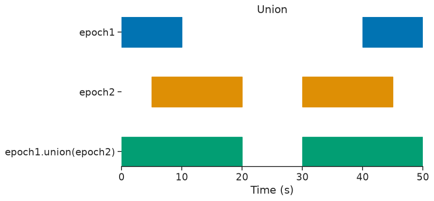
intersect#
epoch = epoch1.intersect(epoch2)
print(epoch)
index start end
0 5 10
1 40 45
shape: (2, 2), time unit: sec.
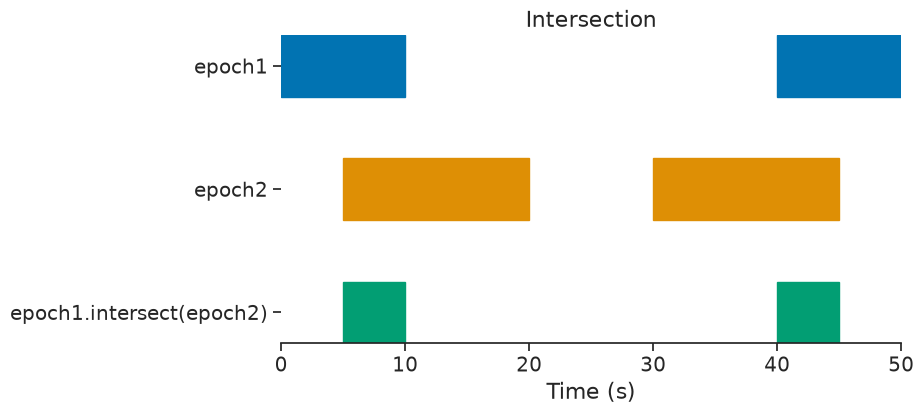
set_diff#
epoch = epoch1.set_diff(epoch2)
print(epoch)
index start end
0 0 5
1 45 50
shape: (2, 2), time unit: sec.
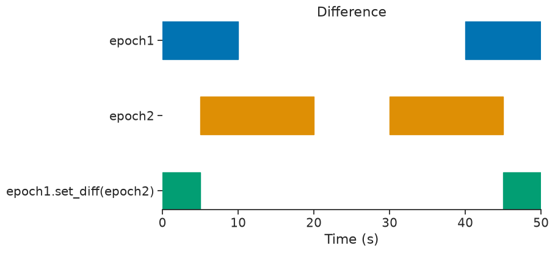
split#
Useful for chunking time series, the split method splits an IntervalSet in a new IntervalSet based on the interval_size argument.
epoch = nap.IntervalSet(start=0, end=100)
print(epoch.split(10, time_units="s"))
index start end
0 0 10
1 10 20
2 20 30
3 30 40
4 40 50
5 50 60
6 60 70
7 70 80
8 80 90
9 90 100
shape: (10, 2), time unit: sec.
Drop intervals#
epoch = nap.IntervalSet(start=[5, 30], end=[6, 45])
print(epoch)
index start end
0 5 6
1 30 45
shape: (2, 2), time unit: sec.
drop_short_intervals#
print(
epoch.drop_short_intervals(threshold=5)
)
index start end
0 30 45
shape: (1, 2), time unit: sec.
drop_long_intervals#
print(
epoch.drop_long_intervals(threshold=5)
)
index start end
0 5 6
shape: (1, 2), time unit: sec.
merge_close_intervals#
index start end
0 1 6
1 7 45
shape: (2, 2), time unit: sec.
If two intervals are closer than the threshold argument, they are merged.
print(
epoch.merge_close_intervals(threshold=2.0)
)
index start end
0 1 45
shape: (1, 2), time unit: sec.